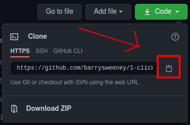
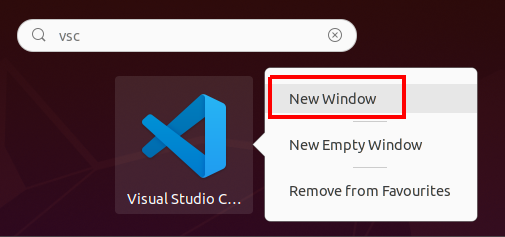
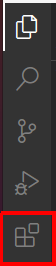
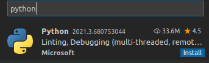
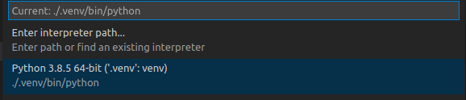
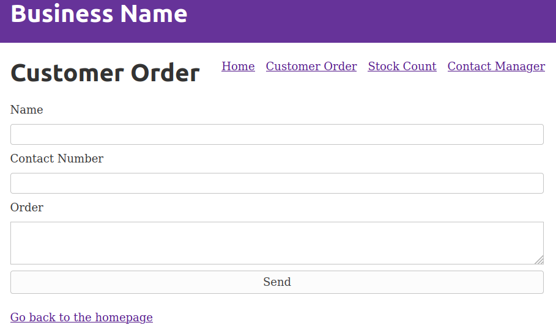
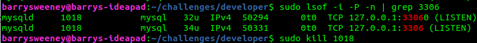

Who is it for?
The owner of a small business such as a fast-food restaurant.
What does it do?
With one click, a full IT system is set up for the business which will allow the business owner and employees to interact with familiar software to make sure the work that needs done for their job gets done.
How does it do this?
The end project will make use of open source software running in Docker containers and using a Flask REST API webserver to simplify interactions with the software services.
We also provide custom, web user interfaces to help make running the business via these services intuitive.
- Manager Interface. The manager interface streamlines communication between the business entities: manager, employees, and suppliers
- Employee Interface. Employees fill in a series of digital forms which log important information about the processes they complete in their work.
How do we test the system?
We also want to provide a testing framework with simulated users and managers using a tool such as PySelenium.
What's In This Document
üë§ Understanding a business
We want to solve problems our user is facing and improve their overall work-flow. In order to do that we need to define our user and figure out more specific details regarding their current work-flows.
After conducting a survey with Google forms and an in person interview with a local business owner, the following use cases have been identified. These are jobs we want to incorporate into our product to improve the user's workflow.
Use Cases
Manager Use Cases
| Situation (When) | Motivation (I want to) | Expected Outcome (So I can) |
|---|---|---|
| Stock is low | Order Stock | Be prepared for orders |
| Employee joins | Train employee | Confidently put them on a shift |
| Employee leaves | Hire employee | Have sufficient staff |
| Customer complains | Communicate with customer | Apologize and find problem source |
| Quality decreases | Communicate with staff | Get standards back to where they should be |
| Shift ends | Record sales | Update accounts and make predictions |
| Sales decrease | Communicate with staff and investigate other local businesses | Determine the cause of sales decreasing |
| Product sells out | Make product unavailable | Stop taking orders |
| Week is about to begin | Send hours to staff | Make any necessary changes |
| Week is over | Pay staff | Keep their next wage payment separate |
| Employee complains | Communicate with employee | Determine cause of complaint and potential solutions |
| Bill arrives by post | Pay bill | Not accrue additional fees |
| Problem with stock | Contact supplier | Get a refund or replacement |
Employee Use Cases
| Situation (When) | Motivation (I want to) | Expected Outcome (So I can) |
|---|---|---|
| Phone rings | Answer | Take order or answer customer query |
| Order comes through app | Read order | Prepare order |
| Shift begins | Turn on equipment | Prepare orders later |
| Shift ends | Turn off equipment | Prevent fire risk and electricity cost |
| There are no orders to be made | Clean or prepare for future orders | Be prepared for future orders |
| Shift needs changed | Communicate with management and colleagues | Have colleague cover shift and hours updated |
| Shift ends | Lock shop | Keep equipment and cash inside safe |
| Shift ends | Count cash | Send sales details to manager |
| Shift ends | Clean and prepare equipment for next day | Not be reprimanded |
| Customer enters shop | Approach customer | Take their order |
| Customer order ready | Give it to the customer and take their payment | Complete the order |
If we think about think about completing these tasks in terms of webpages we see that for communication or record keeping we can provide forms on the user interface but for tasks which need performed physically such as turning off equipment we can just provide a form to acknowledge that the task has been completed.
Open source software can enable us to automate some of the tasks required to run the business. Stock could be automatically re-ordered for example. Open source communication services can also be employed.
üõ´ Getting the current system up and running
It may seem like a lot of initial setup if you're new to the tools but it'll be well worth it. Getting familiar with these tools will put you in good stead to take your ability as a software engineer to the next level and will set you apart from others interviewing for entry-level software engineering jobs.
Set up Git and GitHub
We'll begin by getting the necessary files onto your machine with Git
From The Odin Project - Introduction to Git:
"Git is like a really epic save button for your files and directories. Officially, Git is a version control system.
The next few steps have been adapted from The Odin Project - Configure Git (Linux or Mac) and Github (all operating systems)
First we open a new terminal with the key combination ctrl+alt+t or alternatively search for
"terminal"

From there we can run these commands in the terminal to update the Linux system
sudo apt update
sudo apt upgradeAnd to install git
sudo add-apt-repository ppa:git-core/ppa
sudo apt update
sudo apt install gitNow we can configure Git and GitHub. Be sure to enter your own information inside the quotes (but include the quotation marks).
git config --global user.name "Your Name"
git config --global user.email "yourname@example.com"We change Git's default branch (don't worry about the Git terminology here) to main to match GitHub's default branch name
git config --global init.defaultBranch mainNext you can go to GitHub.com and create an account if you don't already have one.
That completes our Git setup.
After getting our project up and running, to get started with Git I recommend returning this video by Cory Schafer and this Git lesson on The Odin Project. Try not to feel too overwhelmed by all the commands at this point, as you'll soon find out there are only a few commands you'll use in your basic Git workflow
Now we can get all the files you need to get up and running on your machine.
The next few steps have been adapted from GitHub Docs - Fork a repo
On GitHub, we go to the 1 Click Startup repository
We click to fork the repository, essentially creating a new copy that doesn't affect the original

Now we can clone the forked repository so you have the files available on your machine as well as on your GitHub account.
You can modify the following URL with your GitHub username to find your forked repository: https://github.com/YOUR-GITHUB-USERNAME/1-click-startup
We can click the code button above the list of files

Next, to clone the repository with HTTPS you can click the clipboard icon to copy the URL (note the URL should look like https://github.com/YOUR-GITHUB-USERNAME/1-click-startup )
Now we can go back to our terminal and type git clone and paste the copied URL with ctrl+shift+v
It should look something like this
git clone https://github.com/YOUR-GITHUB-USERNAME/1-click-startupIf we hit enter the local clone should be created and we should have all the files we need.
Set up Docker and Docker Compose
Set up Docker Engine
We'll install Docker so we can run our different services (frontend UI, database, etc) in containers to limit the number of services we need to install locally.
From Docker:
"Containers are a standardized unit of software that allows developers to isolate their app from its environment, solving the “it works on my machine” headache. For millions of developers today, Docker is the de facto standard to build and share containerized apps"
This guide includes installing Docker engine on Ubuntu. For other operating systems, Linux platforms, and alternative install methods I'll point you to these guides to
The following steps are adapted from Install Docker Engine on Ubuntu
If you think you may have some older versions of Docker installed tou can uninstall them with
sudo apt-get remove docker docker-engine docker.io containerd runcNext we'll set up the Docker repository. First we'll update the apt package index and install the packages that allow apt to use a repository over HTTPS.
sudo apt-get update
sudo apt-get install \ apt-transport-https \ ca-certificates \ curl \ gnupg-agent \ software-properties-commonNext we'll add the official Docker GPG key:
curl -fsSL https://download.docker.com/linux/ubuntu/gpg | sudo gpg --dearmor -o /usr/share/keyrings/docker-archive-keyring.gpgAnd we can set up the stable repository with the following command
echo \
"deb [arch=amd64 signed-by=/usr/share/keyrings/docker-archive-keyring.gpg] https://download.docker.com/linux/ubuntu \
$(lsb_release -cs) stable" | sudo tee /etc/apt/sources.list.d/docker.list > /dev/nullWe can now install the latest version of Docker Engine and containerd
sudo apt-get update
sudo apt-get install docker-ce docker-ce-cli containerd.ioSet up Docker Compose
Next we'll install Docker Compose
From Docker - Overview of Docker Compose:
"Compose is a tool for defining and running multi-container Docker applications."
The following steps are adapted from Docker - Install Docker Compose
This is the command we can use to install Compose on Linux systems, for other systems and alternative install options you can use Docker - Install Docker Compose
sudo curl -L "https://github.com/docker/compose/releases/download/1.28.6/docker-compose-$(uname -s)-$(uname -m)" -o /usr/local/bin/docker-composeAnd we can apply executable permissions with
sudo chmod +x /usr/local/bin/docker-composeSet up IDE
We'll be using Visual Studio Code (VS Code) for the purpose of this guide due to it's versatility; allowing us to code JavaScript and Python in the same editor.
I think the easiest way is to open up Ubuntu Software which should appear when you start searching for "ubuntu"

From inside the Software store you can use the üîé icon and start searching for "vscode"

And we can now click the install button

We can now search for "vscode" and at this point I like to add to favourites so I can access VS Code from the application drawer

THe following section of the tutorial draws from Getting Started with Python in VS Code You can now open a new window of Visual Studio Code
Now we can navigate to the extensions tab
And download the Python extension
As Ubuntu comes with Python3 pre-installed we can move on to installing pip. (For other Operating Systems you can see options like brew for MacOS and WSL for Windows in Getting Started with Python in VS Code )
To install pip...
sudo apt install -y python3-pipWe can now open our Flask code and select our Python interpreter
From Getting Started with Python in VS Code
"Python is an interpreted language, and in order to run Python code and get Python IntelliSense, you must tell VS Code which interpreter to use."
Inside the cloned 1-click-startup repository you'll see a folder "1cs-backend" which you can right click to select open with other application

We can select VS Code and from here, we can install a virtual environment. Here's what the Visual Studio Code guide referenced above has to say about them:
"A best practice among Python developers is to avoid installing packages into a global interpreter environment. You instead use a project-specific virtual environment that contains a copy of a global interpreter. Once you activate that environment, any packages you then install are isolated from other environments. Such isolation reduces many complications that can arise from conflicting package versions."
Within VS Code you can use ctrl+alt+` to open a terminal and type the following to setup and
activate the virtual environment
python3 -m venv .venv
source .venv/bin/activateWe can use ctrl+shift+p to open the command palette and start typing "python:select interpreter"
And select our interpreter from the menu (or navigate to the folder on your system)
We can install the packages required by our backend code by running the following command within our activated virtual environment
pip3 install -r requirements.txtThat's all the work done to set up our python backend. If you try to run the code now you'll still get errors because we are yet to setup our database etc.
Run development containers
To run our development containers we'll navigate to where we've cloned the files locally which can be done by
opening a terminal with ctrl+alt+t
From here we can change directory to the cloned repository with
cd 1-click-startupNow we can run
sudo docker-compose upThe relevant ports are now exposed and can be accessed on your local machine
The Frontend Interface is accessible at http://localhost:8000
This frontend connects to the Backend Webserver at http://localhost:5000
Requests are made form the backend to the MySQL Database at http://localhost:3306
For more control over the database in development, a database graphical interface - Adminer - is accessible at http://localhost:8080
To login we enter our server as "mysqldb", username as "root" and password as "p@ssw0rd1"
This configuration information as well as other ports exposed for user automation can be found in the
docker-compose.yaml file at the root of the cloned directory.
Additional ports have been exposed such as
We'll dive a little deeper into this file when we move on to adding a service later but for now we can take a quick look so you get the general idea of how we tell our application which services to start and what port to expose them on:

Essentially we either provide a path to a Dockerfile to build the service (as done with the backend service) or we name the image as an existing service we want to use such as with the mysql image (this image is then pulled from Docker Hub)
We don't need to worry too much about all of the commands right now as we'll see them again later when we're adding a new service.
*******************************************************
From Selenium:
"Selenium automates browsers. That's it! What you do with that power is entirely up to you. Primarily it is for automating web applications for testing purposes, but is certainly not limited to just that. Boring web-based administration tasks can (and should) also be automated as well."
üíΩ Custom Webserver
From Python Basic - What is Flask Python?:
"Flask is a web application framework written in Python. A Web Application Framework or simply a Web Framework represents a collection of libraries and modules that enable web application developers to write applications without worrying about low-level details"
When a user submits a form or clicks a button on the font-end user interface in their browser, a request is made to certain endpoint on the "backend" webserver. For example, when a user attempts to login, their email and password is sent to the Flask webserver which then performs the authentication.
Let's start running through the code.
We start by importing the relevant packages which are either shipped with Python or installed using pip from
our requirements.txt file.
# For handling requests and responses
import json
from flask import Flask, request
# For database connection
import mysql.connector
# For password encryption
from passlib.hash import sha256_crypt
# To enable requests from the frontend user interface
from flask_cors import CORS, cross_originWe then create and configure the app
# Create Flask instance
app = Flask(__name__)From Flask - Application Setup:
__name__is the name of the current Python module. The app needs to know where it’s located to set up some paths, and__name__is a convenient way to tell it that.
Next, we use the flask_cors module to allow communication between our frontend interface and
backend webserver.
# Enable CORS to permit requests from the frontend to the backend (a different origin)
CORS(app) # Enables CORS for all routes
# Allow Content-Type header
app.config['CORS_HEADERS'] = 'Content-Type'From MDN Web Docs - CORS:
Cross-Origin Resource Sharing (CORS) is an HTTP-header based mechanism that allows a server to indicate any other origins (domain, scheme, or port) than its own from which a browser should permit loading of resources
Although we've created a dependency between the MySQL and Flask server containers in the docker-compose.yaml
file using depends_on, we still need to wait for the MySQL server within the container
to be ready for connections.
# Wait for MYSQL container to be ready for connection before allowing requests to database
ready = False
while not ready:
try:
# Connect to db with parameters matching docker-compose.yaml file
mydb = mysql.connector.connect(
host="mysqldb",
user="root",
password="p@ssw0rd1"
)
# Create cursor
cursor = mydb.cursor()
# Create and use database "startup" if it doesn't exist
# TODO: Implement persistent database storage with volume mounting
cursor.execute("CREATE DATABASE startup IF NOT EXISTS ")
cursor.execute("USE startup")
# Create "users" table if it doesn't exist
cursor.execute(
"CREATE TABLE IF NOT EXISTS users (id int(11) AUTO_INCREMENT PRIMARY KEY, name VARCHAR(255), email VARCHAR(255) UNIQUE , password VARCHAR(255), role VARCHAR(255), business VARCHAR(255), can_log_in BOOLEAN)")
# Close connection
cursor.close()
mydb.close()
# Break out of while loop by setting ready to True
ready = True
except mysql.connector.errors.InterfaceError:
# Try to connect to database again
continueNext we'll look at two routes in a little bit more detail. We'll first look at user registration as an introduction to our authentication routes.
# Authentication
# User registration route
@app.route('/register', methods=['POST'])
@cross_origin()
def register():
# Get values from json request body
data = request.json
name = data['name']
email = data['email']
role = data['role']
business = data['business']
# Encrypt plain text password
password = sha256_crypt.encrypt(data['password'])
# Employees can't log in until manager approves
can_log_in = False
# Managers can log in immediately
if role == "manager":
can_log_in = True
# Connect to db with parameters matching docker-compose.yaml file
mydb = mysql.connector.connect(
host="mysqldb",
user="root",
password="p@ssw0rd1",
database="startup"
)
# Create cursor
cursor = mydb.cursor()
# Execute query to add user to database users table
cursor.execute(
"INSERT INTO users(name, email, password, role, business, can_log_in) VALUES(?, ?, ?, ?, ?, ?)",
(name, email, password, role, business, can_log_in,))
# Commit data to db
mydb.commit()
# Close connection
cursor.close()
mydb.close()
# Return success message
return json.dumps({'success': True}), 200, {'ContentType': 'application/json'}Essentially what we have above is that the user will enter their email, password, business, and role, into a
form on the frontend. THe data is then sent to the flask server which will store the users details in the
database. Managers can log in immediately but employees will need to wait for manager's approval before they
log in since their can_log_in flag will initially be false.
Next we'll take a look at the route used to complete a customer order.
# Store new customer order in the database
# TODO: Restrict route to logged in users
# TODO: Link order to business
# TODO: Reduce stock level of ordered items
@app.route('/customer/order/new', methods=['POST'])
@cross_origin()
def customer_order():
# get values from json request body
data = request.json
customer_name = data['name']
contact_number = data['number']
customer_order = data['order']
# Connect to db with parameters matching docker-compose.yaml file
mydb = mysql.connector.connect(
host="mysqldb",
user="root",
password="p@ssw0rd1",
database="startup"
)
# Create cursor
cursor = mydb.cursor()
# insert values from form into new record in CUSTOMER_ORDER table
cursor.execute("INSERT INTO customer_order (customer_name, contact_number, customer_order) \
VALUES (%s,%s,%s)", (customer_name, contact_number, customer_order))
# Commit data to db
mydb.commit()
# Close connection
cursor.close()
mydb.close()
# Return success message
return json.dumps({'success': True}), 200, {'ContentType': 'application/json'}You'll notice some similarities across the routes as we're typically doing the following steps:
- Extract data from request
- Connect to database
- Interact with database
- Close database connection
- Send response to user
One last thing we'll mention before we move onto adding a new service to the application is the idea of extracting data from the URL. For example:
# Get an employees details from the database using their id
@app.route("/employee/<id>")
def get_employee(id):
return 'Not yet implemented'Using the <id> syntax in the route and having the id as a method parameter
allows us to
use id inside the method which will allow us to search the database by id for example.
➕ Adding a new service
Many small businesses use spreadsheets to manage payroll and sales predictions as opposed to expensive proprietary specialized applications.
Let's add NextCLoud which will allow our user to use the integrated Collabora Office Online to manage and edit documents.
Firstly, we'll need to modify our docker-compose.yml file to add the new service
version: "3.7"
services:
frontend:
...
backend:
...
adminer:
...
db:
...
nextcloud:
image: nextcloud
restart: always
ports:
- 80:80
links:
- db
volumes:
- nextcloud:/var/www/html
environment:
- MYSQL_PASSWORD=p@ssw0rd1
- MYSQL_DATABASE=nextcloud
- MYSQL_USER=nextcloud
- MYSQL_HOST=db
depends_on:
- db
pyselenium:
...
firefox:
...
selenium-hub:
...We set the image to pull from Docker Hub, set some environment variables, and map the port from within the container to the same port on our local machine.
Next we'll link this service to the custom frontend
ü§ñ Automated Employee Demo
User experience design details are listed below but for now I feel like it's worth skipping ahead to our first glimpse at automating our user, and work backwards from there.
As one of the main goals of this project is to create automated users, it's worth exploring an example of one of the tasks that have been automated.
We'll have PySelenium interact with our user interface to populate and submit a form to our backend Flask webserver which will then store data in a sqlite3 database.
üõë Hold Up ✋ Before we go any further I'd like to mention that it isn't essential to understand concepts like containers and Docker compose network at this point. When a new concept pops up I'll make sure to link to it's documentation for future reference. For now feel free to gloss over it and just get a feel for the overall flow of data and how our different services communicate. As an aside, the best resource I've found for learning these concepts was this course which you can watch on a PluralSight free trial.
In fact before we dive into code, let's set the scene with an analogy: We can think of containers as rooms in our hotel, and our "Docker network" as our hallway that connects all of our rooms. Our localhost is our hotel reception (or lobby if you prefer).
When we run sudo docker-compose up we're starting different containers
relating to our
application.
We're getting our rooms ready and letting our guests into them.
Our automated user lives in one of these containers/rooms. With the following line of code, they can get the webdriver for Selenium which allows them to access the web.
They walk down the corridor to the Webdriver room to get the key for the door to the Web Browser room.
driver = webdriver.Remote(desired_capabilities=webdriver.DesiredCapabilities.FIREFOX,
command_executor="http://172.17.0.1:4444/wd/hub")
We use http://172.17.0.1 instead of http://localhost since we're communicating from within one container to a different container, for more information about this bridge between networks using the host machine you can refer to this StackOverflow question by user klor.
With the next line of code our automated employee can access the customer order page of the frontend user interface which is in a different container accessible at port 8000 on our Docker network.
driver.get("http://172.17.0.1:8000/customer-order")This is what our employee now sees:
They can now fill in and submit the form:
driver.find_element_by_id("customer-name").send_keys("John Doe")
driver.find_element_by_id("customer-contact-number").send_keys("+44700000010")
driver.find_element_by_id("customer-contact-number").send_keys("Bottle Water")
driver.find_element_by_id("submit-customer-order").click()
If we look at the code for this form we can see that it is sending a POST request to our backend Flask webserver running on port 5000 of our Docker network (We take the letter we wrote in the frontend room to Flask's room).
<form method="post" action="http://172.17.0.1:5000/customer/order/new">...Let's look at what's happening over on the server side by visiting our Flask webserver.
@app.route('/customer/order/new', methods=['post'])
def customer_order():
name = request.form['customer-name']
contact_number = request.form['customer-contact-number']
order = request.form['customer-order']
c.execute("INSERT INTO CUSTOMER_ORDER(CUSTOMER_NAME,CONTACT_NUMBER,CUSTOMER_ORDER) \
VALUES (?,?,?)", (name, contact_number, order,))
conn.commit()
return 'OK'
We're extracting the data from the form that was posted and inserting it as an new record into our customer order table.
We can see that Flask and sqlite3 share the same room, if it start's getting too crowded we might want to prepare a new room for sqlite3
Although this is only a single use case, that of an employee taking a customer order, it highlights the flow of data through some of our integrated services.
üìä Automated Manager Demo
⛈ Adding work problems in the application
Troubleshooting
Error: for db ... 0.0.0.0:3306: bind: address already in use - to solve
this you can find which process is using the port by running sudo lsof -i -P -n | grep 3306 and
use the id to end the process with sudo kill id for example 